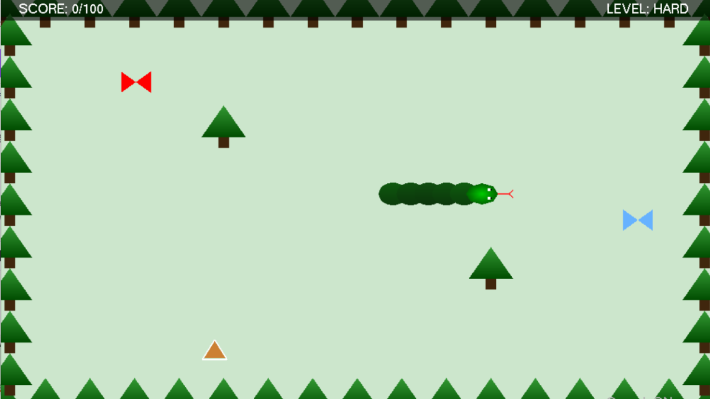

GAME DEVELOPMENT · COMPUTER GRAPHICS
Eco-Serpent: Forest Cleanup
A 2D Snake Game with an Environmental Conservation Theme
Eco-Serpent: Forest Cleanup is a 2D arcade game inspired by the classic Snake game. Developed using C++ and OpenGL, the game features a forest-themed environment where players control a snake to collect garbage, earn points and help clean up the forest.

Project Overview
This project was developed as part of TMT2033: Computer Graphics. The game combines classic Snake gameplay with an environmental conservation concept.
Players control a snake in a forest environment, collect different types of garbage and avoid obstacles and hazards. The game includes two levels with different challenges and increasing difficulty.
Project Objectives
- Develop a playable 2D game using C++ and OpenGL.
- Apply computer graphics concepts through character animation and object rendering.
- Implement game mechanics such as movement, scoring and collision detection.
- Create multiple levels with different challenges.
- Promote environmental awareness through a forest cleanup theme.
Gameplay Features
- Snake Movement: Control the snake using keyboard input.
- Garbage Collection: Collect items such as tin cans, bottles and debris to earn points.
- Snake Growth: The snake grows after collecting garbage.
- Collision Detection: Detect collisions with boundaries, trees, the snake's own body and moving hazards.
- Scoring System: Earn points by collecting garbage while avoiding hazards.
- Level Progression: Progress from Level 1 to Level 2, where the game becomes more challenging.
- Game States: Includes a main menu, instructions, countdown, Game Over and winning screen.
My Contributions
Responsible for Game Logic, Mechanics and Collision Detection. My main responsibilities included:
- Implementing game initialization, including the snake's initial position, score, level and movement speed.
- Developing garbage collection mechanics, including score updates and snake growth.
- Implementing collision detection between the snake, garbage, boundaries, trees and moving hazards.
- Managing game states, including countdown, Game Over and winning conditions.
- Developing game update logic and level progression from Level 1 to Level 2.
- Assisting with final code integration, reviewing modifications and refining the combined source code.
The initial game concept and ideas were discussed and developed collaboratively by all team members.